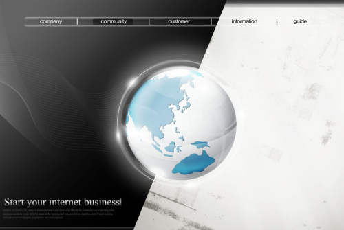

公司网站被黑应该怎么处理？原文出处:本文由博客园博主kkH1234提供。
原文连接:https://www.cnblogs.com/kkH1234/p/10591071.html
许多公司网站被黑被进犯，首要牵扯到的便是网站的开发言语，包含了代码言语，以及数据库言语，现在大多数网站都是运用的PHP，JAVA，.net言语开发，数据库运用的是mysql，oracle等数据库，那么网站被进犯了该怎样办？运营一个网站，总被进犯是时有发生的，特别一些公司网站，以及个人建站，都是没有专职的安全技能人员保护，导致网站常常被进犯，常常被跳转到其他网站，乃至有些网站都被挂马，网站主页标题也被重复篡改，没有专业的安全技能保护，面临这样的问题只能是干着急，没有什么好办法。那么咱们SINE安全针对网站被进犯的问题，来跟我们讲讲该怎样处理，处理这样的问题。

网站被进犯的症状如下:
1.现在2019年网站被进犯的症状最常见的是，翻开网站会主动跳转到其他网站上去，网站的主页文件常常被篡改，主页的标题以及描绘都会被篡改，进犯凶猛的有些网站还被百度的网址安全中心拦截掉，给拜访网站的用户带来了很欠好的用户体会。
2.网站的代码里被刺进歹意的黑链，正常翻开网站底子看不到这些黑链，只能经过查看源代码才干发现这些链接，往往都会被添加到网站主页的最底部，都是描文本的一些友情链接，有的还会躲藏这些黑链的字体大小，缩小到最小，让你底子发现不了，进犯网站的意图便是植入一些黑链来添加其他网站在百度的权重，获取一些流量。
3.还有一些网站被进犯的状况是网站在百度的快照录入大增，有的乃至录入了好几万条网站的快照，都是一些网站自身内容无关的一些录入，底子都是网站被劫持，从百度点击进去直接跳转到其他网站上了，查看服务器里的源代码都会找到被进犯的痕迹，一般都是网站的根目录下有一些特别姓名命名的文件，以及一些html文件，特别是权重较高，流量较大的网站都会被劫持快照录入。
4.网站被进犯的打不开，翻开网站时快时慢，服务器的CPU占用到百分之百，底子无法翻开网站，数据库进程占用到百分之百，服务器都卡的无法长途操作，这些底子都是DDOS流量进犯跟CC进犯，运用带宽上G来进犯服务器的IP，导致网络的阻塞，让网站无法翻开，同行竞赛以及得罪人是常常会运用这种进犯手法的。
5.网站翻开提示无法衔接数据库，数据库被进犯者歹意删去，网站的代码文件被删去，有些网站翻开都是提示无法衔接，乃至有些网站代码中了勒索病毒，或者是挖矿病毒都会呈现以上这些进犯症状的。
6.有些网站被进犯，主要是篡改会员的注单，修正会员的账号暗码，包含歹意提现，歹意转账，修正会员的银行卡，这样的进犯往往是为了获取利益，一些会员体系渠道层级较多，往往成为进犯的方针，篡改数据库，给自己的账号加币，给会员渠道体系带来较大的经济损失。
网站被进犯怎样办？ 该怎样处理？
对网站的代码，数据库常常的备份，有些网站运用的阿里云的服务器，能够启用阿里云的快照备份功用，对整个网站服务器进行守时备份快照，避免网站数据被删，被篡改，能够运用快照及时的康复网站到最新的状况。对网站域名运用CDN加快，躲藏网站的实在IP，避免进犯者对网站进行DDOS、CC进犯。
网站的体系进行晋级，打补丁修正网站缝隙，对网站安全的进行全面的安全检测，以及网站的木马后门常常进行查看，看是否被上传一句话网站木马，以及PHP脚本木马。网站缝隙的修补与木马后门的铲除，需求许多专业的常识，也不仅仅是常识，还需求很多的经历堆集，所以从做网站到保护网站，保护服务器，尽可能找专业的网站安全公司来处理问题，国内也就Sine安全、绿盟、启明星斗等安全公司比较专业.
假如对服务器比较懂，也能够对网站的文件夹权限进行安全布置，包含一些图片目录，JS目录，缓存目录，都能够对其进行无脚本履行权限的设置，有些模板文件夹能够设置只读权限，去掉php的运转权限。常常的更新服务器的暗码，对网站的后台地址进行更改，不要运用默许的admin，manage,houtai等姓名命名的后台地址，对网站的管理员账号暗码进行加强，数字+字母+大小写组合。